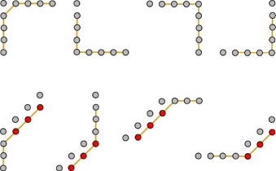
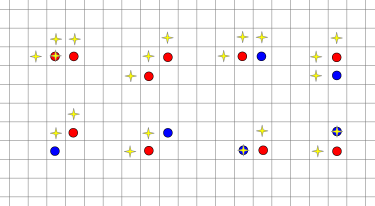

The fact that the input is a set of rectangles is not essential to this problem. We just wanted to limit the amount of data you had to download to test your program. So let us forget about the rectangles, and instead consider any initial configuration of n bacteria on the grid. The challenge here is to compute the answer fast. A turn by turn simulation will not be good enough. We are going to aim for an O(n) solution instead.
One way to start attacking this problem is to look at examples. The Bacteria game is pretty fun to play around with after all! Here are some examples you can try:
H by W bacteria.H by W rectangle where the bacteria only lie on the four boundary edges.X + Y = C, the right-most point containing a bacterium X = Xmax, and the bottom-most point containing a bacterium Y = Ymax. We claim that after one turn, the configuration will still be a single connected piece, the highest diagonal will become X + Y = C+1, and the max X and Y coordinates will not change. This will continue until the final second when we come down to a single point (Xmax, Ymax). So the number of turns before everything disappears is Xmax + Ymax - C + 1.
One thing we note is that the 3rd and 4th examples behave very differently. In the 3rd example, the number of bacteria decreases by 1 in each turn, while in the 4th, all the bacteria disappear immediately.
Define a graph on the bacteria. Two bacteria are neighbors if they are adjacent on the grid via a horizontal line, a vertical line, or a type 1 diagonal. We begin by finding the connected components of this graph.
This may seem like a simple definition, but it is really the key to solving the whole problem. It is quite similar to the more common graph where each grid node has 8 neighbors, one in each compass direction, except we do not consider the 2 directions along a type 2 diagonal. Remember the 3rd and 4th examples above? If we start with n nodes, there is just one connected component in the former, but n connected components in the latter.
We observe that after each turn, a connected component will give birth to a new connected component (unless it was a single point and disappears), and different components will not become connected together. See the details in the next section.
So, the answer is the maximum elimination time over all the components. For a single piece (i.e., connected component), we find the highest type 1 diagonal X + Y = C, as well as the maximum coordinates Xmax and Ymax. The number of turns for that piece to disappear is then Xmax + Ymax - C + 1.
Our solution depends very heavily on several key observations. If you try some examples, you should be able to convince yourself empirically that these observations just have to be true. But in the interest of completeness, we will also sketch out a more formal proof here.
In the following discussion, we will fix a configuration called the old state, and we will consider the new state obtained after one turn. When we talk about a connected piece, we will always assume the non-trivial case where there are at least 2 points in the piece.
For each bacterium in the new state, let us consider the reason why it is there. If it was in the old state, we credit the reason for its existence to the set of itself and its north and/or west neighbor. If it was not in the old state, we credit the reason for its existence only to the set of its north and west neighbors. In both cases, we call such a set the credit set for that single bacterium.
Proposition 1. If the old state is a single piece, and the highest type 1 diagonal is X + Y = C, then in the new state, the highest type 1 diagonal will become X + Y = C+1.
Proof. Consider a bacterium at position (X, Y) on the top diagonal of the old state. Since this is the top diagonal, that bacterium does not have a north neighbor or a west neighbor, and it will die. In particular, the diagonal X + Y = C will be completely empty in the new state.
Now pick the south-most bacterium in the old state on the diagonal X + Y = C. Let its position be (X, C-X). If there is also a bacterium at position (X+1, C-X-1) in the old state, there will be a bacterium at (X+1, C-X) in the new state (no matter whether it was in the old state or not). Otherwise, since (X, C-X) is part of a connected piece and it's on the highest diagonal, there will be a bacterium at either (X, C-X+1) or (X+1, C-X) in the old state, and by our rules, this bacterium will survive to the new state. Hence, in any case, we find at least one bacterium will be on the diagonal X + Y = C+1 in the new state, which proves the proposition.
The following two Propositions can be justified in the same way:
Proposition 2. If the old state is a single piece, the maximum X coordinate and the maximum Y coordinate will be unchanged in the new state.
To see Proposition 3, note that if the old state is connected, then any two credit sets can be joined by some path consisting of horizontal, vertical, and type 1 diagonal segments. As the following picture shows, any possible segment from such a path will give birth to connected segments in the new state:

Finally, we are going to prove that different pieces will not be merged together in a turn.
Proposition 4. If two bacteria are neighbors in the new state, then their credit set are all from the same piece in the old state.
This is obviously true if both bacteria are also in the old state. Otherwise, it is one of the cases in the following picture. The two bacteria are the circled points. A blue point indicates that the bacterium was also in the old state, a red point indicates that the bacterium was only in the new state. Then the yellow stars represents the points in the credit sets. In any situation we either reach an impossible configuration, or get to a point where it is clear the credit sets are connected.
